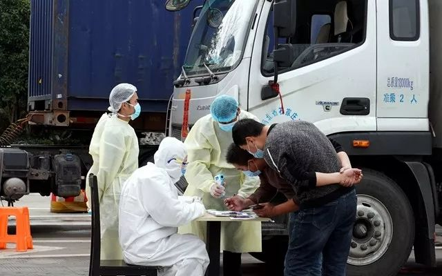
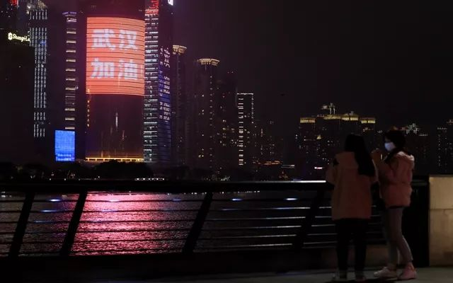

机场等7个小时才拉到客！出租车司机呼吁减免份子钱
原文链接 备份链接 01.02.2020本文字数：2017，阅读时长大约4分钟 导读：乘客减少、营运收入明显降低，“份子钱”成了出租车司机的痛。 作者 | 第一财经 童兰 邱智丽 魏明明 往年春节正月初六过后，众多城市迎来返程高峰。但受 …
17.02.2020

本文字数：4137，阅读时长大约7分钟
导读： 昔日繁华热闹的街道“空荡荡”成为疫情期间在上海的老外们的最直接感受；而“不是滋味”，代表了他们热爱上海的心声。
作者 | 第一财经 权小星 潘寅茹 钱童心
新型冠状病毒肺炎疫情的持续，不仅改变了许多普通居民的生活，同时也改变了许多旅居上海的外国侨民的生活节奏。在上海居住十余年的韩侨张昌民（音译），目前在一家韩国大型贸易企业的驻沪代表处工作。他多年来居住在上海闵行区虹桥镇的“韩国街”周边。在他看来，即便是“曾经见过风风雨雨”的他，目前的疫情也仍然让他“发懵”。张昌民指着空空荡荡的“韩国街”，向第一财经记者表示，即便是在韩企的艰难时刻，上海的韩国街都没有这么空旷过。这也让在上海生活多年的他心里不是滋味。事实上，“空荡荡”成为疫情期间在上海的老外们的最直接感受；而“不是滋味”，也代表了他们热爱上海的心声。

▲元宵节当晚，上海浦东陆家嘴高楼点亮为武汉加油的景观灯。图源：新华社

改变生活
根据上海市人民政府发布的《上海统计年鉴2018》，截至2017年底，上海全市在沪外国常住人口16.3363万人，日本、美国、韩国、德国、澳大利亚占在沪外国常住人口前五位。其中，韩国国籍常住人口为2.0823万人，连续多年排名前三位。根据上海韩国商会方面掌握的数据，闵行区由于距离市区及商务区较近，且早期形成的“韩国街”位于闵行，因此也成为上海韩侨最密集的区域之一。“韩国街”周边在不到2平方公里的该区域内，据不完全估算居住着近万名韩国侨民。近日，第一财经记者来到虹桥镇“韩国街”。街上行人稀少，大多数商户仍然大门紧闭，只有少部分韩国超市及餐厅提供服务。曾担任上海韩国商会秘书长的“资深”韩国侨民朴烓铸告诉第一财经记者，由于目前在沪韩企处于转型期，本地化速度加快——部分企业的制造基地随着长三角一体化的步伐搬迁至江浙地区，且中国本土员工的比例也在逐步增高，上海逐渐转型为总部与营销基地。“因此，有一部分劳动密集型韩企离开了上海，而一些大型企业的总部则为了吸引中国应聘者则搬迁至上海其他地区，导致韩国街周边的常住人口相较鼎盛时期有所减少，但韩国街仍然是许多上海韩侨心目中的‘老家’。”而在韩国餐厅、商场与培训机构密集、被称为韩国街的“地标建筑”的井亭首尔广场商业楼前，第一财经记者看到由闵行区人民政府张贴的通告，要求包括从韩国在内的外地返沪人员，一律进行14天隔离，并实施封闭式管理。现场的一位保安也透露，目前该商场建议，除部分为生活必需服务的商户外，尽量还是暂缓复工；且进入商场前，需要测量体温。此外，由在沪的韩系培训机构组成的上海韩国教育培训机构联合会方面也发布通知，将推迟复课时间，以保证青少年的健康。在一家尚在营业的韩国超市K-Mart，有多名韩侨在购买韩国食品。一位购物的韩侨向记者表示，他计划购买一批韩国速食后，这几天就“不出门”了，在家里“自我隔离”，并等待复工。该超市的经理也表示，自从疫情开始呈现上升的1月底开始，该超市的方便类食品销量同比增长超过440%，且目前由于中韩间航班减少，备货方面颇感吃力。已经在上海生活了快4年的法国人玛丽告诉第一财经记者，过去一个月，她大部分时间都待在家里没有出门。玛丽还是两个孩子的母亲，法国学校也停课了，她需要和丈夫轮流在家里照顾孩子。玛丽对第一财经记者表示，“我们获得允许在家里办公，只有不得已要用公司电脑的时候，才会去办公室。”她的公司在办公楼的18层，但是她选择走楼梯。“我看到钟南山院士说乘坐电梯容易增加感染风险，所以宁可走楼梯。”玛丽说，“再说我的健身房也关门了，正好乘机锻炼身体。”德国人史蒂文在一家消费品公司担任高管。他对第一财经记者表示，他现在尽可能地避免去公司上班，避免去人多的地方。“我在家里每天都和全球的团队通过电话沟通工作，影响不大。”史蒂芬告诉第一财经记者，“目前公司的员工大部分已经回来了，只有20%的员工仍然受影响。”玛丽和史蒂文都对第一财经记者表示，他们相信中国政府能够处理好这场危机，并且表示，只要有一个开放透明的城市治理环境，自己仍会选择留在中国、留在上海。不过也有一些外国人表示自己的生活并没有被疫情打乱。法国人纪尧姆是一位创业者，平日工作节奏相对自由，他在上海还经营着一家自己的骨科诊所。纪尧姆对第一财经记者表示，过去一个月，他每天都会出门遛弯，拍很多照片。“我太享受这座安静的城市了。”纪尧姆对第一财经记者表示，“这样的机会也非常难得，以往的外滩都是人山人海，现在就成了我一个人的。这种感觉有点奢侈。”
▲
元宵节上海豫园推出“云赏灯”，通过线上互动，让网友在线上观看豫园灯会。图源：新华社
自助互助
上海武康路上的西餐厅Blanche经营者腾龙（Jerome Tauvron）对第一财经记者表示，虽然在春节餐厅停止营业，但是由于对疫情给业务带来的影响有所预判，他们在春节期间就已经加班开发出一份新的外卖菜单。他对第一财经记者表示，“2月3日推出外卖菜单，很多老顾客的接受度很高。我也感谢他们对餐厅安全卫生状况的信任。”腾龙说，幸好餐厅经营并不是靠“走量”，所以在疫情中的受影响程度也比很多餐厅要小。“我们的服务员都是上海本地员工，他们在春节期间也没有出上海，所以不用隔离。”“（上海政府和相关部门的）租金的缓缴和社保金方面的减免措施能帮助我们克服目前的难关。因为虽然营业额下降了，但是我们还是支付员工全额工资。”腾龙说，他非常热爱上海这座城市，不管发生什么，他都不会离开。而随着疫情的持续发酵，许多韩侨也开始展开了自助与互助行动。在上海“韩国街”内从事韩国料理的商户组成的“韩国外食业协会上海分会”向旗下餐厅发出倡议，部分具备条件的韩侨餐厅在自愿原则下，为韩国侨民提供餐饮服务，且不加收服务费用。谈起这一倡议的初衷，该协会负责人向第一财经记者表示，多数韩侨只身一人受公司派遣赴华工作，家中并不具备自行开伙的条件。参加该倡议的虹泉路“麻浦屋”餐厅负责人告诉第一财经记者，目前大多数餐厅的中国员工仍然无法复工，导致餐厅均由老板一人打理，“招待不周，现在上菜慢了一些”。韩国高丽大学的上海校友会近日也在其所在群组内发布通知，经过学校总部与校友工作的韩国本土口罩企业协调，向居住在上海的该校校友免费提供10个口罩，而该校校友会负责人李忠明还承担了将口罩从韩国带回中国的费用。张昌民所在的公司是具有资质的贸易企业。在积极协助中国有关机构及电商企业在韩国购入口罩的同时，他还分别向公司所在的区疾控中心及韩国商会赠送了1万个口罩，以帮助本地居民有效抗击疫情。上海韩侨媒体《Shanghai Journal》副总编朴胜浩表示，了解到目前中国国内的物资短缺，且优先供应至医疗机构等情况，其倡议韩侨群体尽量不给忙碌于抗击疫情的中国“添麻烦”，强烈建议韩侨从韩国本土准备口罩、消毒液等防疫物资，发挥“自助”与“互助”精神，携手共同解决问题。此外，一些韩侨也在积极组织力量，帮助中国能够早日走出难关。在“韩国街”居住4年的“韩国宝妈”罗志娜，近日自愿申请帮助相关组织发放口罩，并协助向发动韩侨进行防疫物资的互助。她向第一财经记者表示，她在中国的这几年，感受到来自中国邻里的善意和爱心，在困难的时刻，帮助自己周边的韩侨和中国邻居，也是她理所应当做的事情。曾在上海华东师大留学、目前在韩国汉阳大学担任特聘教授的禹守根，在听闻中国国内缺乏疫情防护物资后，第一时间在韩国的赴华留学生群体及韩国民众中发起筹款倡议，在短短两天内向中方转交了善款。他还在韩国国内多次提出，除了韩国中央政府以外，韩国各地地方政府也应当积极向中国的友好城市捐赠物资，以帮助中国尽快渡过难关。
“上海温情”
事实上，虽然疫情对于韩国侨民的生活产生一定的影响，但多名韩国侨民也向第一财经记者表示，正是上海的高效应对与智慧防疫措施，让他们在疫情中也感受到些许“家的温暖”。张昌民表示，在疫情大规模扩散后，没过几天，街道和派出所方面就通过上海韩国商会等韩侨组织，发布了韩文版的疫情防控措施信息，并与韩国驻沪领馆等机构合作，共同发行了载有发热门诊地址及就诊指南的韩文版手册。闵行区虹桥镇社区网格化管理工作人员也向第一财经记者透露，考虑到虹桥镇韩国公民较为密集的特点，因此在上海市官方发布了疫情有关指南以后，第一时间联系了社区内精通韩语的志愿者及专业翻译人员，加班加点进行翻译，并在2天之内将一份数十页的指南翻译成韩文，并转交至上海韩国商会等韩侨机构；而参与翻译的韩侨全先生不仅志愿参与了翻译，还协助武汉市应急办进行了口罩等韩国捐赠物资的标准统一。上海韩国商会副会长金龙德也向第一财经记者表示，在疫情大规模暴发后的第一时间，上海闵行区政府、上海市出入境管理局及其他有关机构主动联系了韩国商会，并就如何向韩侨及时发布信息进行了频繁的沟通，共同做好疫情期间的各种防护工作。此外，由上海市新闻办及外事办联合主办的上海对外信息服务热线962288，也成为在沪韩侨温暖的“温情一刻”。张昌民表示，他的一个韩侨朋友恰巧遇到身体不适，根据规定应当向居委会进行报备后前往定点医院，而拨打了该热线以后，接线员不厌其烦地向其介绍居委会联系方式及医院的具体位置，这也让处于疫情恐慌中的韩侨感受到温暖，“至少，让韩侨们不再束手无策”。已在热线工作了9年的上海对外信息服务热线首席服务代表完颜绍铧告诉第一财经记者，最近几天的统计显示，外籍人士咨询最多的还是口罩问题，由此还附带了所属居委会的查询。“我们不仅要帮外籍人士查到住址所属的居委会，我们还会电话确认，这个小区是不是在这个居委会的管辖范围内。”完颜绍铧说，“我们在实际操作中，确实发现网上的一些信息与实属居委会还是有出入的，存在信息不匹配的现象。”“运作十多年来，我们从来没解释过与传染病相关的内容。”上海对外信息服务热线主任乐迪在接受第一财经记者采访时也表示，新冠肺炎疫情发生的当下，即便是运作了十多年的热线也遇到了许多“第一次”。
乐迪要求员工抓紧每分每秒进行培训，不能乱用词汇，让每个员工用自己的工作语言准确地讲述“确诊”、“疑似”、“发烧”、“白肺”等一堆新冠肺炎相关的名词。他说，上海作为一个国际大都市，不会在这一特殊时期把这些在上海工作或者生活的外籍人士忘却，“我们要体现出上海的温情”。


原文链接 备份链接 01.02.2020本文字数：2017，阅读时长大约4分钟 导读：乘客减少、营运收入明显降低，“份子钱”成了出租车司机的痛。 作者 | 第一财经 童兰 邱智丽 魏明明 往年春节正月初六过后，众多城市迎来返程高峰。但受 …
原文链接 备份链接 本报记者 张晓迪 北京报道 武汉疫情还在继续，居家隔离是当前各地预防疫情传播的重要手段，而随之对经济领域的影响不言而喻，零售、餐饮行业首当其冲。记者近日在北京探访了解到，由于没人上门吃饭，以及年夜饭订单取消，卖菜、扔 …
原文链接 备份链接 相比其它行业，餐饮业是最早遭受疫情冲击的行业之一。这个春节，餐饮人正在遭受极大的心智和经营能力的考验 图/法新 文｜《财经》记者 杨立赟 编辑｜余乐 一个月前，应乾坤决定留在杭州过年的时候，没想过如今的自己会进退两难。 …
原文链接 备份链接 22.01.2020本文字数：1913，阅读时长大约3.5分钟 导读：第一财经记者在武汉、广州、上海等地进行了多方实地采访后了解到，不少地区的药房、便利店内的口罩在这几天已经脱销，即便有所补货也会被一抢而空。 …
原文链接 备份链接 阻断新型冠状病毒引起的肺炎疫情的传播，公共交通工具的消毒防疫尤为重要。 记者 | 刘朝晖 今天，是春节后上海复工的第二周工作日的开始。从2月10日复工开始，已经有很多人重返工作岗位，同时返沪的人也越来越多，上海市内公共 …